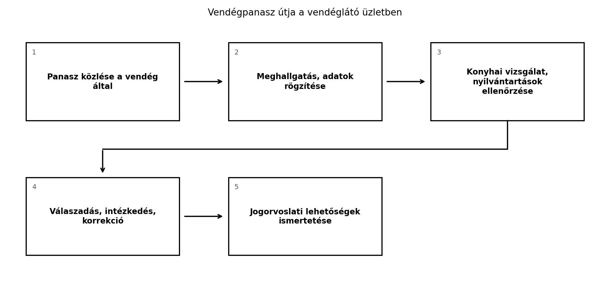

Vendég panaszkodik: a leves hideg, a számlán más tétel szerepel, vagy a gluténmentesnek mondott étel mégis panaszt okozott. Ilyenkor a felszolgáló elsőként találkozik a vendéggel, de a hiba gyakran a konyhában keletkezett. A fogyasztóvédelem szabályai pontosan megmondják, milyen jogai vannak a vendégnek, és mi a te felelősséged. Ha nem ismered ezeket, akkor egy egyszerű panaszból hatósági eljárás, hírnévvesztés vagy pénzveszteség lehet.
A vendégpanasz útja az üzletben egy rövid folyamat, amelynek minden lépése befolyásolja a vendég élményét és az üzlet jogi helyzetét.

A panaszkezelés nem vita, hanem szabályozott folyamat. A vendég nem az ellenséged, hanem a fogyasztó, akinek a védelmét törvények biztosítják.
Definíció. Fogyasztó. A fogyasztó olyan természetes személy, aki a szakmája, önálló foglalkozása vagy üzleti tevékenysége körén kívül jár el, amikor ételt rendel, szolgáltatást vesz igénybe vagy árut vásárol. A vendéglátásban tehát a vendég fogyasztó: nem üzletszerű tevékenységként étkezik, hanem magánszemélyként.
Definíció. Fogyasztóvédelem. A fogyasztóvédelem azoknak a jogi, állami és társadalmi eszközöknek az összessége, amelyek a fogyasztók egészségét, biztonságát, gazdasági érdekeit és tájékozódási jogát védik. A fogyasztóvédelem nem a vállalkozás ellen dolgozik, hanem a tisztességes verseny és a biztonságos szolgáltatás feltételeit teremti meg.
Definíció. Szavatosság. A szavatosság a hibás teljesítésért való helytállás kötelezettsége. Ha az étel romlott, a számla hibás, vagy a szolgáltatás nem az ígért minőségű, a vendég szavatossági igényt érvényesíthet. A szavatosság a szerződésből ered, és fogyasztói szerződésnél a teljesítéstől számított meghatározott ideig (ellenőrizendő: Ptk., jelenleg 1 év) vélelmezni kell, hogy a hiba már a teljesítéskor megvolt; ezt a vállalkozás megdöntheti. Ezen idő után a fogyasztónak kell bizonyítania a hibát.
Definíció. Jótállás. A jótállás olyan, jogszabályban vagy szerződésben vállalt szigorúbb helytállás, amely bizonyos termékekre (például tartós fogyasztási cikkek, elektronikai eszközök) kötelező. A jótállási idő alatt a vállalkozás csak akkor mentesül, ha bizonyítja, hogy a hiba oka a teljesítés után keletkezett. A kötelező jótállás tartós fogyasztási cikkekre (például konyhai gépre) vonatkozik (ellenőrizendő: hatályos kormányrendelet); az ételre és italra nem. A vendéglátásban a jótállás ritkán fordul elő, például a vendéglátó üzem saját, tartós eszközeinek vásárlásakor.
Definíció. Vásárlók könyve. A vásárlók könyve az üzletben elhelyezett, hitelesített nyilvántartás, amelybe a vásárlók és a vendégek bejegyezhetik panaszaikat, észrevételeiket. A vendéglátó üzletnek biztosítania kell a hozzáférést és a bejegyzésekre határidőn belül válaszolnia kell.
Jogszabály. A fogyasztóvédelem alapjait a fogyasztóvédelemről szóló 1997. évi CLV. törvény és a Polgári Törvénykönyv (2013. évi V. törvény) határozza meg. A fogyasztóvédelmi hatósági feladatokat a kormányhivatalok (járási hivatalok) látják el; az ételek higiéniáját és biztonságát az élelmiszerlánc-felügyelet (NÉBIH, járási hivatal élelmiszerlánc-biztonsági szakterülete) ellenőrzi. (Ellenőrizendő: hatályos jogszabályszámok és hatásköri rendeletek.) Az Európai Unió fogyasztóvédelmi irányelvei (például a fogyasztói jogokról szóló 2011/83/EU irányelv) a magyar szabályozás alapját adják.
Fogyasztói jogok. A fogyasztóvédelem törvényi alapelvei öt területre oszthatók:
Állami és társadalmi szervek. A fogyasztóvédelmi ellenőrzést a kormányhivatalok (járási hivatalok) végzik. Az élelmiszer-higiéniai és élelmiszer-biztonsági ellenőrzések az élelmiszerlánc-felügyelet (NÉBIH és a járási élelmiszerlánc-biztonsági hivatal) hatáskörébe tartoznak (ellenőrizendő: hatásköri rendelet). A békéltető testületek a vármegyei (korábban megyei) kereskedelmi és iparkamarák mellett működnek, és a fogyasztói jogviták ingyenes, gyors, bíróságon kívüli rendezését segítik. A fogyasztói érdekvédelmi szervezetek (például a Fogyasztóvédelmi Egyesületek Országos Szövetsége) a fogyasztók tájékoztatásában és képviseletében játszanak szerepet. (Ellenőrizendő: szervezeti nevek és hatáskörök.)
A vásárlók könyvét a vendéglátó üzletben jól látható, könnyen hozzáférhető helyen kell elhelyezni. A könyv hitelesítésének rendjét a hatályos kereskedelmi szabály adja (ellenőrizendő: ki hitelesíti), és a lapjait sorszámozva kell megőrizni. A vendég bejegyzése a panasza és észrevétele. A vállalkozás köteles a bejegyzést kivizsgálni, és írásban, a bejegyzéstől számított határidőn belül válaszolni. Ez a határidő általában 30 nap, de az aktuális jogszabályi előírást mindig ellenőrizni kell. (Ellenőrizendő: a vásárlók könyve vezetésének részletszabályai, válaszadási határidő, hitelesítési folyamat.)
Eljárás. A vásárlók könyvi bejegyzés kezelése.
A panaszkezelés a fogyasztóvédelem gyakorlati oldala. A szakácsnak is ismernie kell, mert a konyhai hiba esetén neki is részt kell vennie a vizsgálatban és a javításban.
Szabály. A vendégpanasz kezelésének alapelvei.
Eljárás. Vendégpanasz kezelésének lépései.
Higiénia. Ha a panasz ételmérgezésre, idegen anyagra, allergén-szennyezésre vagy romlott ételre utal, a konyhában azonnal biztosítani kell a panaszos étel mintáját (ételminta), le kell állítani a gyanús tétel kiadását, és értesíteni kell az üzletvezetőt. Az ilyen esetekben a NÉBIH felé történő jelentés kötelező lehet. (Ellenőrizendő: a bejelentési kötelezettség és határidő a hatályos élelmiszerlánc-felügyeleti szabályok szerint.)
A fogyasztóvédelemben gyakori megoldás az árleszállítás. Ez a vendég és a vállalkozás közötti megállapodás, amelynek összegét a hiba súlyához kell igazítani.
Számítás. Egy vendég 4 800 Ft értékű főételt rendelt. A hús száraz volt, a köret langyos, a tálalás késett. A vállalkozás elismeri a hibát, és 20%-os árleszállítást ajánl fel. Mennyit fizet a vendég a főételért?
Adott: számla szerinti ár , árleszállítás mértéke .
Keresett: kedvezményes ár .
Képlet:
Behelyettesítés:
Ellenőrzés: az árleszállítás összege , ami valóban 20%, mert .
Az étterem tehát 960 Ft-ot enged el, a vendég 3 840 Ft-ot fizet, és az ügyet írásban lezárják.
Munkalap: Vendégpanasz kezelése étteremben
A panaszkezelés minősége nem az étel technológiai minőségét méri, hanem azt, hogy a fogyasztóvédelmi eljárás mennyire volt szabályos.
Hiba 1. A felszolgáló vitatkozni kezd a vendéggel,
és azt mondja: „ez nem lehet, mert frissen készült”.
Ok: a munkatárs személyes támadásnak veszi a panaszt,
és nem alkalmazza a panaszkezelési protokollt.
Helyes gyakorlat: a panaszt mindig vita és előzetes
ítélkezés nélkül, udvariasan kell fogadni, majd a tényeket a konyhában
ki kell vizsgálni.
Hiba 2. Nincs írásos nyoma a panasznak, ezért a
határidő elmulasztása esetén a vállalkozás nem tudja bizonyítani, hogy
foglalkozott az üggyel.
Ok: hiányzik a belső panaszkezelési szabályzat vagy a
munkatárs nem tudja, hogy a szóbeli panaszt is dokumentálni kell.
Helyes gyakorlat: minden panaszt, akár szóbeli, akár
vásárlók könyvi, rögzíteni kell a panaszkezelési nyilvántartásban.
Hiba 3. A vállalkozás nem ad tájékoztatást a
jogorvoslati lehetőségekről, mert attól tart, hogy a vendég hatósághoz
fordul.
Ok: a jogorvoslati lehetőségek elhallgatása
fogyasztóvédelmi jogsértés, és súlyosbíthatja az esetet.
Helyes gyakorlat: a válaszlevélben mindig szerepeljen a
békéltető testület és a fogyasztóvédelmi hatóság elérhetősége.
Egy vendég a vásárlók könyvébe bejegyzést tett, mert a gluténmentesnek jelölt tésztafogás után rosszullétet érzett. A panaszbejegyzés szerint az ételben búzalisztből készült rántás volt. Az üzletvezető azonnal ellenőrizte a konyhai allergén-nyilvántartást, és kiderült, hogy a séf valóban hagyományos rántást használt, mert a gluténmentes lisztet nem különítette el. A panaszt rögzítették, a vendéget orvoshoz irányították, az ételt eltávolították az étlapról, és a válaszban leírták a javító intézkedést: külön gluténmentes előkészítő felület, külön edény és címkézett liszt. A vendég a békéltető testülethez is fordult, de a vállalkozás által alkalmazott korrekciót elfogadta, mert a válasz határidőben, szakszerűen és átláthatóan érkezett.
Tanulság: a fogyasztóvédelem nemcsak jogi kötelezettség, hanem lehetőség is arra, hogy a hibából tanulva javítsa a konyha az élelmiszer-biztonságot és a vendég bizalmát.
1. feladat (A)
Magyarázd el röviden, mi a vásárlók könyve, és hogyan kell vezetni (a
hitelesítés rendjét ellenőrizd a hatályos szabályban).
2. feladat (A)
Igaz vagy hamis? A fogyasztóvédelem csak az élelmiszer-biztonsággal
foglalkozik, a számla hibáival nem.
3. feladat (B)
Készíts táblázatot a szavatosság és a jótállás két-két jellemzőjéről
(mikor érvényes, mi a bizonyítási teher).
4. feladat (B)
Állítsd helyes sorrendbe a panaszkezelés hét lépését: konyhai vizsgálat,
döntés, válaszadás, meghallgatás, jogorvoslati tájékoztatás,
adatfelvétel, dokumentálás.
5. feladat (C)
Egy vendég azt állítja, hogy a sült csirke nyers volt, és a családjából
ketten rosszul érezték magukat. Mit teszel elsőként a konyhán? Fogalmazd
meg a lépéseket a panaszkezelési eljárás szerint, és jelöld, milyen
dokumentumokat ellenőriznél.
6. feladat (D)
Készíts rövid (fél oldalas) panaszkezelési jegyzőkönyvet egy fiktív
esethez: a vendég a levesben műanyagdarabot talált. Tartalmazza az
adatfelvételt, a konyhai vizsgálatot, a döntést és a
választervezetet.
1. feladat (A)
A vásárlók könyve hitelesített nyilvántartás, amelybe a vendégek
panaszai és észrevételei kerülnek. A hitelesítés rendje a hatályos
szabálytól függ (ellenőrizendő: ki hitelesíti). A vállalkozás köteles a
bejegyzést kivizsgálni és válaszolni. (Ellenőrizendő: hitelesítési
szabályok.)
2. feladat (A)
Hamis. A fogyasztóvédelem a gazdasági érdekeket is védi, így a számla
hibáira, a félrevezető árfeltüntetésre és a hibás szolgáltatásból eredő
kárra is kiterjed.
3. feladat (B)
| Jellemző | Szavatosság | Jótállás |
|---|---|---|
| Mikor érvényes | hibás teljesítés esetén | jogszabályban vagy szerződésben vállalt termékeknél |
| Bizonyítási teher | a fogyasztónak kell valószínűsíteni a hibát, de fogyasztói szerződésnél a teljesítéskor fennálló hiba vélelmezett (ellenőrizendő) | a jótállási idő alatt a hiba a vállalkozás terhére esik, neki kell bizonyítania, hogy a hiba a fogyasztó hibájából keletkezett |
A táblázat tájékoztató, a pontos szabályok a Ptk.-ban és a jótállási rendeletben. (Ellenőrizendő.)
4. feladat (B)
Helyes sorrend: meghallgatás → adatfelvétel → konyhai vizsgálat → döntés
→ dokumentálás → válaszadás → jogorvoslati tájékoztatás.
5. feladat (C)
Első lépések: a panaszt udvariasan fogadom, adatokat rögzítek, azonnal
leállítom a gyanús étel kiadását, értesítem a konyhafőnököt és az
üzletvezetőt. Ellenőrzöm a sütési naplót, a maghőmérő használatát, a
sütési időt, a HACCP-feljegyzéseket, a nyers csirke tárolási
hőmérsékletét és az ételminta-megőrzést. Ha rosszullétről van szó, a
vendéget orvoshoz irányítom, és a NÉBIH felé bejelentést teszek.
(Ellenőrizendő: bejelentési kötelezettség.)
6. feladat (D)
A jegyzőkönyv egy lehetséges szerkezete:
A fogyasztóvédelem a vendéglátásban védi a vendégek egészségét, gazdasági érdekeit, tájékozódási és jogorvoslati jogait. A fogyasztó az a természetes személy, aki magáncélból vesz igénybe szolgáltatást. A szavatosság a hibás teljesítésért való általános felelősség, a jótállás pedig jogszabályban vagy szerződésben vállalt szigorúbb helytállás. A vásárlók könyve hitelesített nyilvántartás, amelybe a vendég panaszt írhat; a vállalkozásnak határidőn belül írásban válaszolnia kell. A panaszkezelés lépései: meghallgatás, adatfelvétel, konyhai vizsgálat, döntés, dokumentálás, válaszadás és jogorvoslati tájékoztatás. Allergiás vagy ételmérgezéses panasz esetén az ételminta megőrzése és a hatósági bejelentés kiemelten fontos. A fogyasztóvédelmi ellenőrzéseket a kormányhivatalok és a NÉBIH végzi, a viták rendezését a békéltető testületek segítik. Továbbvitt eredmény. A panaszkezelés lépéseit az Az étlap feladata, rendszere és tartalma alfejezetben használjuk fel, amikor az étlap minőségi követelményeit és a vendégvisszajelzések kezelését tanítjuk.